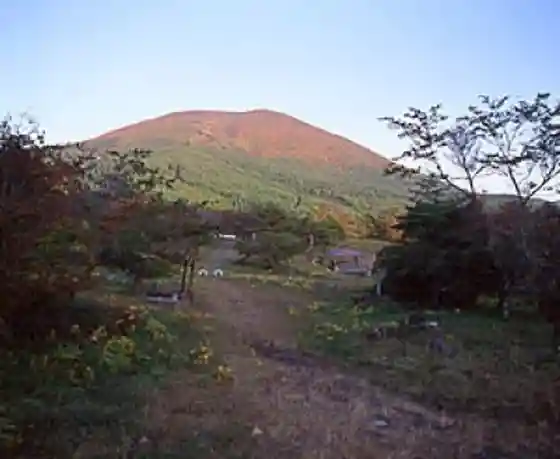
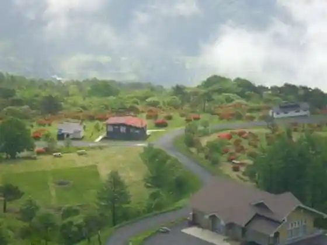
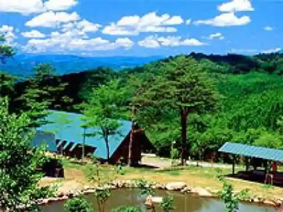
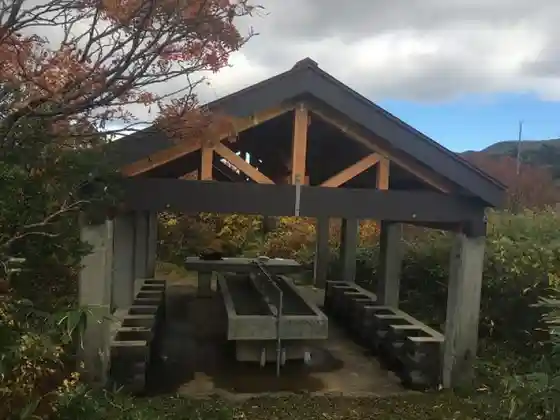

Higamori Campground
Ichinoseki, Iwate · 0191-56-2950 · Official / source link

Boyo Taira Campground
Ichinoseki, Iwate · 0191-64-3701 · Official / source link

Ogon Yama Campground
Ichinoseki, Iwate · 0191-52-2496 · Official / source link

Sugawa Yaeijo
Ichinoseki, Iwate · 070-3826-4918 · Official / source link

Minami Iwate Kantorii Club
Ichinoseki, Iwate · 0191-82-2300 · Official / source link
Noka Resutoran Yume Miru Ro Shi (Otome) no Kan
Ichinoseki, Iwate · 0191-82-2722 · Official / source link
Noka Resutoran
Ichinoseki, Iwate · 0191-43-2721 · Official / source link
Ichinoseki Kantorii Kurabu
Ichinoseki, Iwate · 0191-24-4411 · Official / source link
Aijo Ringo Sono
Ichinoseki, Iwate · 0191-63-2105 · Official / source link
Nikonikodomu
Ichinoseki, Iwate · 0191-63-5551 · Official / source link
Asutoro Roman Daito
Ichinoseki, Iwate · 0191-72-2860 · Official / source link
Mochi Ryori
Ichinoseki, Iwate · 0191-21-2111 · Official / source link
Popo Chan no Ringo Sono
Ichinoseki, Iwate · 0191-63-5333 · Official / source link
Kawasaki Undo Plaza (Guraundo Taiiku Center Tenisukoto)
Ichinoseki, Iwate · 0191-43-4334 · Official / source link
to Ume Kan General Park
Ichinoseki, Iwate · 0191-35-1141 · Official / source link
Ichi no Seki Kenko no Mori Seminahausu
Ichinoseki, Iwate · 0191-39-2020 · Official / source link
Matsuri Ji Su no Land
Ichinoseki, Iwate · 0191-39-2020 · Official / source link
Kawasaki Kanko Sakurambo Sono
Ichinoseki, Iwate · 0191-43-2759 · Official / source link
Fujisawa B&G Kaiyo Center
Ichinoseki, Iwate · 0191-63-5551 · Official / source link
Meika Kawasaki no Saku
Ichinoseki, Iwate · 0191-43-2172 · Official / source link
Iwaidori
Ichinoseki, Iwate · 0191-64-3511 · Official / source link
Hoshi Itake
Ichinoseki, Iwate · 0191-74-3422 · Official / source link
Aina Farm Buruberii Tourist Farm
Ichinoseki, Iwate · 0191-39-2544 · Official / source link
Fujisawa Supotsu Land
Ichinoseki, Iwate · 0191-63-3333 · Official / source link
Makoto Yuno Ei Ba
Ichinoseki, Iwate · 0191-39-2722 · Official / source link
Kamabata Ori
Ichinoseki, Iwate · 0191-75-3134 · Official / source link
Kawasaki Chiba Farm
Ichinoseki, Iwate · 090-6854-4569 · Official / source link
Ichi no Seki Gembi Oto Campground
Ichinoseki, Iwate · 0191-39-2577 · Official / source link
Shiitake no Kan Shin Ni Shiitake no Kasuzuke Ke
Ichinoseki, Iwate · 0191-75-3134 · Official / source link
Kanibatto Ore no Mise
Ichinoseki, Iwate · 0191-43-2801 · Official / source link
Iwate Minami Ushi
Ichinoseki, Iwate · 0191-21-8426 · Official / source link
Daito Ringo
Ichinoseki, Iwate · 0191-75-3134 · Official / source link
Ganso Shiro Anpan
Ichinoseki, Iwate · 0191-64-2040 · Official / source link
Ankake Katsu Domburi Kosumi Shokudo
Ichinoseki, Iwate · 0191-52-2319 · Official / source link
Pora no Jieratoaisu
Ichinoseki, Iwate · 0191-39-2272 · Official / source link
Ennichi
Ichinoseki, Iwate · 0191-34-8030 · Official / source link
Tezukuri no Miso Tsuke Mono Tofu
Ichinoseki, Iwate · 0191-43-3600 · Official / source link
Kintoki Manju
Ichinoseki, Iwate · 0191-43-2191 · Official / source link
(Kabu) Shoei Do
Ichinoseki, Iwate · 0191-23-5008 · Official / source link
Kanibatto (Izakaya Ore no Mise)
Ichinoseki, Iwate · 0191-43-2801 · Official / source link
Minami Koryu Center
Ichinoseki, Iwate · 0191-52-2496 · Official / source link
Makoto Yuon Izumi Center Onsen Koryu Kan (Nichi Kinyu Yoku)
Ichinoseki, Iwate · 0191-39-2713 · Official / source link
Tenku no O Yado Masa Kan
Ichinoseki, Iwate · Official / source link
Shukuhaku Koryu Kenshu Shisetsu Hanayume Paru
Ichinoseki, Iwate · 0191-82-1086 · Official / source link
Iwate Kura Biiru
Ichinoseki, Iwate · 0191-21-1144 · Official / source link
Kame no Ko Sembei Honpo Onami
Ichinoseki, Iwate · 0191-24-3303 · Official / source link
Marusan Shikki Hidehira Nuri
Ichinoseki, Iwate · 0191-75-3153 · Official / source link
Ha Tabako Pai Maru Toku Kashi Mise
Ichinoseki, Iwate · 0191-52-2504 · Official / source link
Kakkodango
Ichinoseki, Iwate · 0191-29-2031 · Official / source link
Amaransasusabure Shiitake Sabure
Ichinoseki, Iwate · 0191-52-2058 · Official / source link
Tezukuri Hamu Soseji Ichinoseki Miito
Ichinoseki, Iwate · 0191-24-2687 · Official / source link
Iwate Meijo Tama no Haru Senmaya Eigyosho
Ichinoseki, Iwate · 0191-52-2150 · Official / source link
Fujisawa Bunka Center Jomon Horu (Jomonjin)
Ichinoseki, Iwate · 0191-63-5516 · Official / source link
Wain Muroneju
Ichinoseki, Iwate · 0191-64-3888 · Official / source link
Wa Iwairingo Jusu Tomatojusu
Ichinoseki, Iwate · 0191-52-5500 · Official / source link
Resutoran (Pettan Kun)
Ichinoseki, Iwate · 0191-29-2000 · Official / source link
Kodai Kome Oriza
Ichinoseki, Iwate · 0191-82-3372 · Official / source link
Kawasaki Bosai Center (Kitakami Kawa Koryu Center)
Ichinoseki, Iwate · 0191-36-5666 · Official / source link
Gembi Kanko Basha
Ichinoseki, Iwate · 0191-25-2652 · Official / source link
Geibi Resutohausu
Ichinoseki, Iwate · 0191-47-2341 · Official / source link
Kuwa Cha
Ichinoseki, Iwate · 0191-74-3555 · Official / source link
Hanaizumi Kanko Kuri Sono
Ichinoseki, Iwate · 0191-82-1596 · Official / source link
Kuramoto Resutoran Yo Ki no Ichi
Ichinoseki, Iwate · 0191-21-1144 · Official / source link
Takaki Bi Kona Takaki Biudon
Ichinoseki, Iwate · 0191-75-3134 · Official / source link
Sosu Katsu Domburi
Ichinoseki, Iwate · 0191-23-3318 · Official / source link
Sansai Kan Fujisei
Ichinoseki, Iwate · 0191-23-4536 · Official / source link
Senmaya Aisuariina
Ichinoseki, Iwate · 0191-52-4568 · Official / source link
Sanno Yama Onsen Zuisen Sato
Ichinoseki, Iwate · 0191-39-2031 · Official / source link
Yo Ki no Ichi Shuzo
Ichinoseki, Iwate · 0191-21-1144 · Official / source link
Naganuma Shukei
Ichinoseki, Iwate · 0191-29-3180 · Official / source link
Roadside Station (Kawasaki)
Ichinoseki, Iwate · 0191-36-5170 · Official / source link
Buna no Mori Matsurube Kan
Ichinoseki, Iwate · 0191-39-2677 · Official / source link
Iwai Kawa River Park
Ichinoseki, Iwate · 0191-21-2111 · Official / source link
Ashi Higashiyama Memorial Museum
Ichinoseki, Iwate · 0191-75-3861 · Official / source link
Senmaya Machikado Museum
Ichinoseki, Iwate · 0195-51-3883 · Official / source link
Ichinoseki Senmaya Sake no Kura Koryu Shisetsu
Ichinoseki, Iwate · 0191-53-2070 · Official / source link
Machi no Eki Shin Town JaJa Uma Plaza
Ichinoseki, Iwate · 0191-53-2900 · Official / source link
Hone Tera Village Shoen Iseki
Ichinoseki, Iwate · 0191-25-6595 · Official / source link
Iwate Safari Park
Ichinoseki, Iwate · 0191-63-5660 · Official / source link
Yamabuki Tanada
Ichinoseki, Iwate · 0191-72-4080 · Official / source link
Itsukushidango no Kan
Ichinoseki, Iwate · 85 · 0191-29-2033 · Official / source link
Kokyoku Taya (Komagataya)
Ichinoseki, Iwate · 0191-39-2930 · Official / source link
Sugawa Bijita Center
Ichinoseki, Iwate · 070-3826-4918 · Official / source link
Ashi Higashiyama
Ichinoseki, Iwate · 0191-75-3861 · Official / source link
Supaku Fujisawa
Ichinoseki, Iwate · 0191-63-5551 · Official / source link
Dai Kago Kirishitan Junkyo Park
Ichinoseki, Iwate · 0191-62-2255 · Official / source link
Ichinoseki Shitei Bunkazai (Kyu Numata Ie Buke House)
Ichinoseki, Iwate · 0191-21-8188 · Official / source link
Shoun Tera
Ichinoseki, Iwate · 0191-23-2789 · Official / source link
Togei Sosaku Kan Togei Center
Ichinoseki, Iwate · 0191-63-3907 · Official / source link
Ark Kangamori
Ichinoseki, Iwate · 0191-63-5100 · Official / source link
Saharagarasu Park
Ichinoseki, Iwate · 0191-29-2288 · Official / source link
Chosho Tera
Ichinoseki, Iwate · 0191-23-6577 · Official / source link
Tsuri Yama Park
Ichinoseki, Iwate · 0191-21-2111 · Official / source link
Oshu Sanju San Kannon Dai 19 Ban Shinzan Kannon Do
Ichinoseki, Iwate · 022-379-5148 · Official / source link
Michi no Kuajisai Sono
Ichinoseki, Iwate · 0191-28-2349 · Official / source link
Ichinoseki Museum
Ichinoseki, Iwate · 0191-29-3180 · Official / source link
Roadside Station (Gembi Kei)
Ichinoseki, Iwate · 0191-29-2000 · Official / source link
Kurikoma Yama
Ichinoseki, Iwate · 0191-23-2350 · Official / source link
Fusa Dokutsu Iseki
Ichinoseki, Iwate · 0191-43-2111 · Official / source link
Kasamatsu
Ichinoseki, Iwate · 0191-43-4021 · Official / source link
Kawasaki no Saku Ato
Ichinoseki, Iwate · 0191-43-2111 · Official / source link
Ishigura Sanrin Kan Plaza
Ichinoseki, Iwate · 0191-43-2111 · Official / source link
Murone Yama
Ichinoseki, Iwate · 0191-64-2111 · Official / source link
Murone Shrine
Ichinoseki, Iwate · 0191-64-2111 · Official / source link
MAPS Paraguraidasukuru
Ichinoseki, Iwate · 0191-64-3081 · Official / source link
Hime Taki
Ichinoseki, Iwate · 0191-64-2115 · Official / source link
Furusato Nature Park Center
Ichinoseki, Iwate · 0191-64-3701 · Official / source link
Kirara Murone Yama Tenmondai
Ichinoseki, Iwate · 0191-64-3700 · Official / source link
Miyazawakenji no Hi
Ichinoseki, Iwate · 0191-47-2111 · Official / source link
Ashi Higashiyama Kago Iwa
Ichinoseki, Iwate · 0191-64-2111 · Official / source link
Arizuka Park
Ichinoseki, Iwate · 0191-64-2111 · Official / source link
Shu Matsu Tera no Suginami Ki
Ichinoseki, Iwate · 0191-47-2111 · Official / source link
Kanko Fujin no Haka
Ichinoseki, Iwate · 0191-47-2111 · Official / source link
Niju Go Bosatsu Do
Ichinoseki, Iwate · 0191-47-2111 · Official / source link
Higashiyama Washi (Kami Suki Kan)
Ichinoseki, Iwate · 0191-47-2424 · Official / source link
Aoyagi Kura Ki Hi
Ichinoseki, Iwate · 0191-47-2111 · Official / source link
Iwai Shimizu
Ichinoseki, Iwate · 0191-47-2111 · Official / source link
Kan Shusai Seirei to
Ichinoseki, Iwate · 0191-52-5462 · Official / source link
Kigan (Fufu Ishi)
Ichinoseki, Iwate · 0191-23-2350 · Official / source link
Kumagaya Art Museum
Ichinoseki, Iwate · 0191-52-3120 · Official / source link
Higamori Forest Park
Ichinoseki, Iwate · 0191-53-2111 · Official / source link
Yamabuki Joshi
Ichinoseki, Iwate · 0191-82-2242 · Official / source link
Hokikaya
Ichinoseki, Iwate · 0191-82-2242 · Official / source link
Horai Yama
Ichinoseki, Iwate · 0191-72-2111 · Official / source link
Kaze Kaoru Oka Michi no Ku Joba Club (Murone Kogen Bokujo Nai)
Ichinoseki, Iwate · 0191-72-4321 · Official / source link
Mokuzo Kannon Bosatsu Zazo
Ichinoseki, Iwate · 0191-75-2570 · Official / source link
Daito Furusato Bunko
Ichinoseki, Iwate · 0191-72-3125 · Official / source link
Nagaizumi Tera
Ichinoseki, Iwate · 0191-72-2267 · Official / source link
Katsu Iwa Keiryu
Ichinoseki, Iwate · 0191-72-2111 · Official / source link
Oguro Taki
Ichinoseki, Iwate · 0191-72-2111 · Official / source link
Goten Yama
Ichinoseki, Iwate · 0191-72-2111 · Official / source link
Surisawa Hachiman Shrine
Ichinoseki, Iwate · 0191-75-2884 · Official / source link
So Yoshi Kumano Shrine
Ichinoseki, Iwate · 0191-72-3732 · Official / source link
Kanpuku Tera
Ichinoseki, Iwate · 0191-76-2220 · Official / source link
Kyo Ta Shrine
Ichinoseki, Iwate · 0191-72-4080 · Official / source link
Hana to Izumi no Park
Ichinoseki, Iwate · 0191-82-4066 · Official / source link
Murasaki Kan Park
Ichinoseki, Iwate · 0191-82-2211 · Official / source link
Kari Ikuzawa no Taki Keiryu Park
Ichinoseki, Iwate · 0191-82-2211 · Official / source link
Oshu Sanju San Kannon Dai 20 Ban Chuko Yama Naruhisa In
Ichinoseki, Iwate · 0191-82-2700 · Official / source link
Oshu Sanju San Kannon Dai 18 Ban Matsuzawa Yama Rokkaku Do
Ichinoseki, Iwate · 0191-82-1309 · Official / source link
Oshu Sanju San Kannon Dai 17 Ban Ryuun Tera Daisho Tera
Ichinoseki, Iwate · 0191-82-4040 · Official / source link
Kencho no Hi
Ichinoseki, Iwate · 0191-43-2111 · Official / source link
Hara Dai Yama
Ichinoseki, Iwate · 0191-72-2111 · Official / source link
Sengoku River Park
Ichinoseki, Iwate · 0191-43-2111 · Official / source link
Kyu Tohoku Saiseki Kojo
Ichinoseki, Iwate · 0191-47-3655 · Official / source link
Ishi to Kenji no Museum
Ichinoseki, Iwate · 0191-47-3655 · Official / source link
Sake no Minzoku Bunka Museum
Ichinoseki, Iwate · 0191-21-1144 · Official / source link
Tateyama Park
Ichinoseki, Iwate · 0191-53-3963 · Official / source link
Gembi Kei
Ichinoseki, Iwate · 0191-23-2350 · Official / source link
Murone Yama no Tsutsuji
Ichinoseki, Iwate · 0191-64-2111 · Official / source link
Yugen Hora
Ichinoseki, Iwate · 0191-47-3303 · Official / source link
Geibikei
Ichinoseki, Iwate · 0191-47-2341 · Official / source link